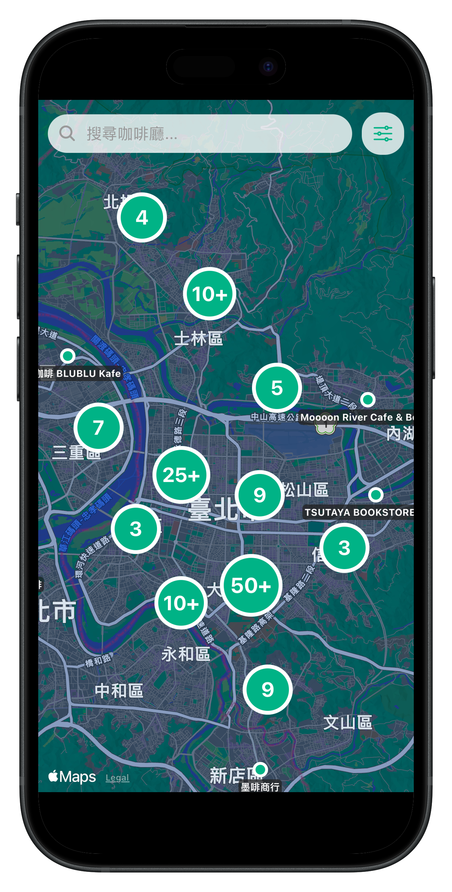
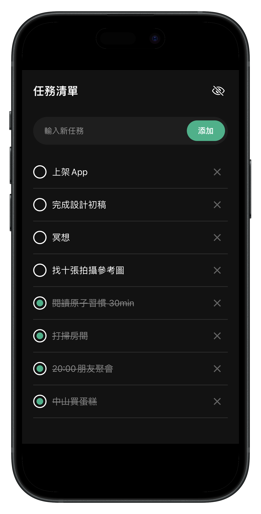
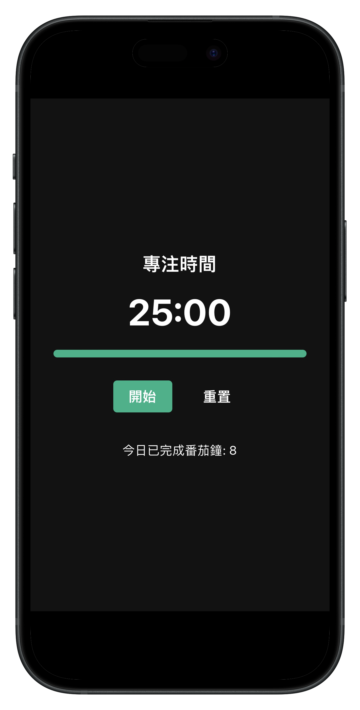
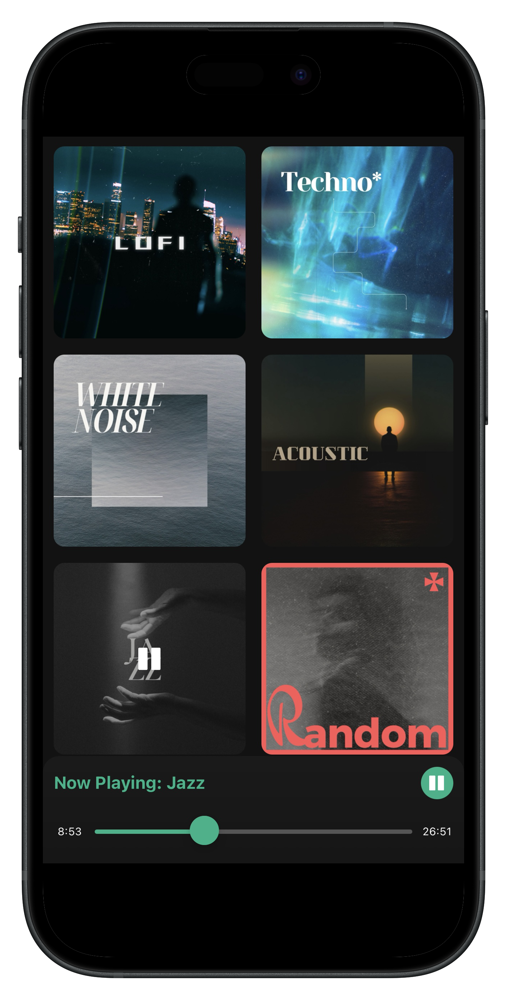
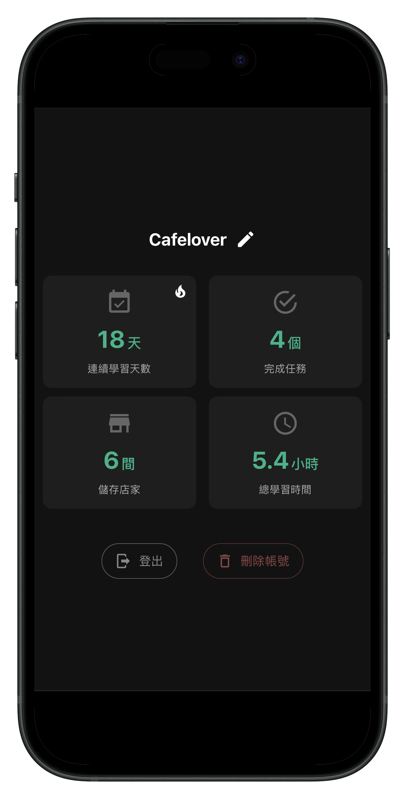

Cafeting
為工作而生的咖啡地圖
探索地圖
輕鬆發現周邊精選咖啡館，透過各種指標篩選， 找到最適合你的咖啡館。

任務管理
簡單快速建立待完成任務輕鬆管理當日行程。

專注模式
打造專屬於你的專注時刻，透過番茄鐘工作法， 讓工作與學習更加高效。

想來點音樂？也可以！
播放我們精心挑選的音樂清單， 隨心切換不同風格，讓每一刻都充滿韻律。

個人檔案
收藏喜愛的咖啡廳，記錄你的工作及學習， 培養高效習慣。
